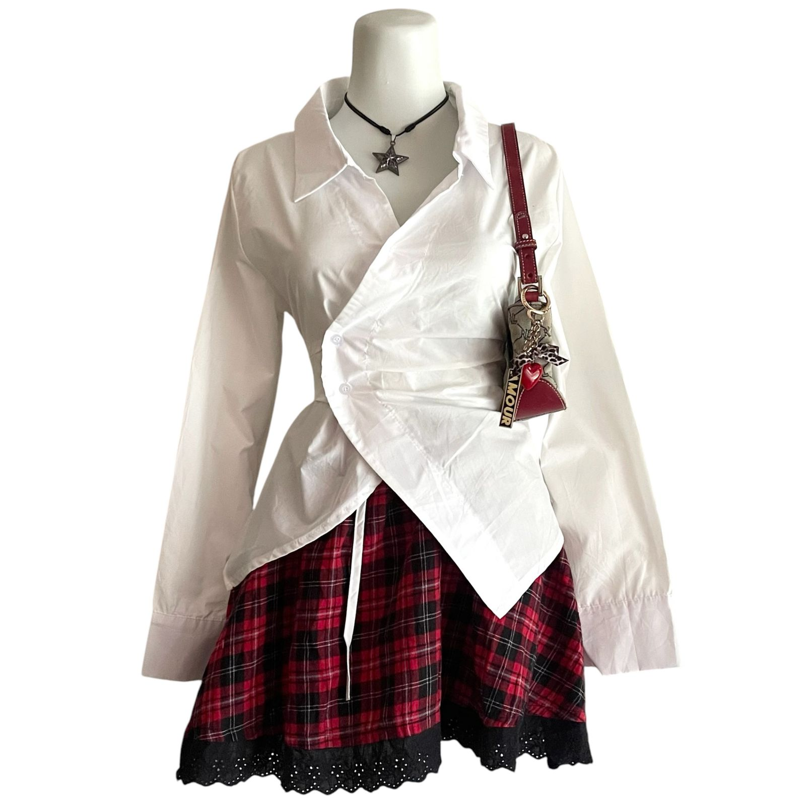
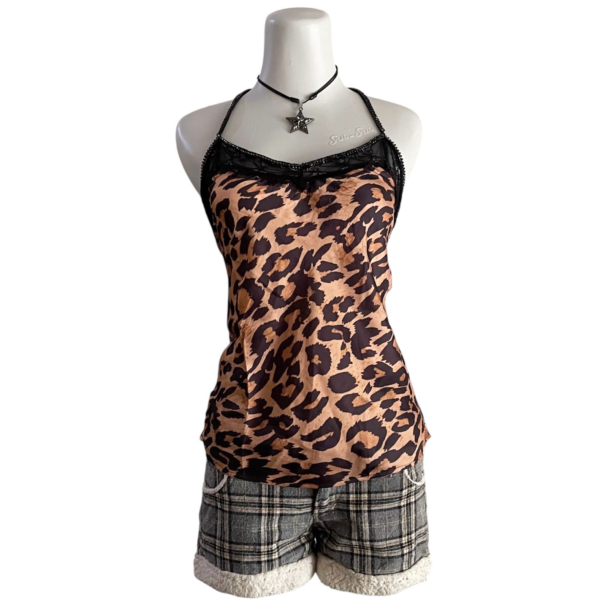

Featured Products



Selamat datang di portfolio saya! Saya adalah seorang Mahasiswa yang memiliki ketertarikan dalam bidang IT dan Bisnis. Saya memiliki usaha dalam bidang fashion, Di sini Anda dapat menemukan beberapa produk dan informasi lebih lanjut tentang saya.